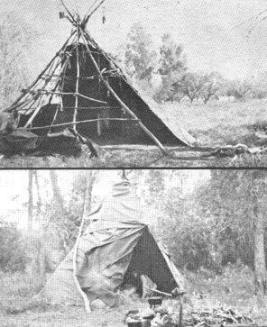

Here's photos of two tipis I've built and lived in. The unique thing about them is that they didn't cost me any money at all.
The tipi with its cover partially removed was 18 feet in diameter. The framework was eucalyptus and the cover was old rugs from trash cans and black plastic from the railroad yards. All the materials were free.
When the picture was taken, the south wall had been lowered to air and dry the interior between the rainstorms that caused the Los Angeles floods of January and February, 1969. The tipi was one of the safest places to be throughout those storms.
There was room for six people in that tent and-quite often on weekends-seven or eight folks would sleep there. I lived in the tipi for three months and, once the police helicopters discovered it, they circled the tent three times a day.
The other tipi is a 12-foot model I built in the Colorado Rockies at an elevation of about 11,000 feet. The cover was 20-ounce canvas and the tent was an excellent shelter for below-freezing weather and light snows.
I highly recommend tipis for temporary housing.
|
 |
|
|